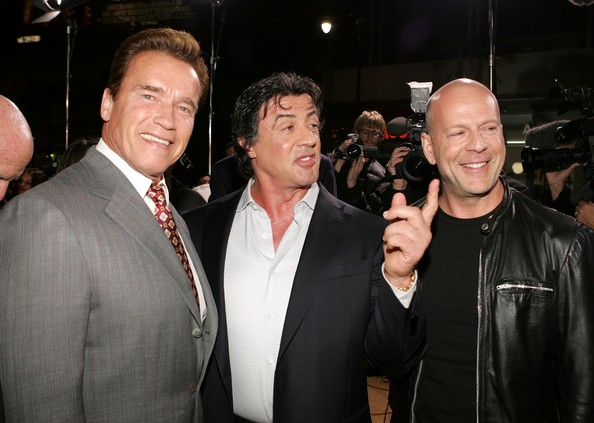

JavaScript: the final frontier
What's so cool about it?
Who am I?
Adrian Makowski
front-end developer
2 years at Roche
Let's get to it!
(ECMAScript)
"The World's Most Misunderstood Programming Language"
Three musketeers
Brendan Eich
Plus, JS had to be done in ten days or something worse than JS would have happened.
Profile
- Creator of the JavaScript scripting language
- April 1995 - Netscape
- August 1996 - JS stable release
- 1998 - chief architect at Mozilla
- August 2005 - CTO of Mozilla
Douglas Crockford
Warning: JSLint will hurt your feelings.

Profile
- E (programming language) contributor
- July 2006 - JSON RFC (4627)
- The Good Parts
- JSLint
-
https://twitter.com/CrockfordFacts
Douglas.crockford(water); returns wine.
- Github flamer ;]
John Resig
Profile
- Creator and lead developer of the jQuery
- Worked on TestSwarm for Mozilla
- Works at Khan Academy
- Secrets of the JavaScript Ninja
- Blogger at ejohn.org
Modern era Javascript
Man who made it possible
Definitely not him
Ryan Dahl
I want programming computers to be like coloring with crayons and playing with duplo blocks.
Nodejs
A platform built on Chrome's JavaScript runtime for easily building fast, scalable network applications. Node.js uses an event-driven, non-blocking I/O model that makes it lightweight and efficient, perfect for data-intensive real-time applications that run across distributed devices.
Example of http server
var http = require('http');
http.createServer(function (req, res) {
res.writeHead(200, {'Content-Type': 'text/plain'});
res.end('Hello World\n');
}).listen(1337, '127.0.0.1');
console.log('Server running at http://127.0.0.1:1337/');
Live example: wordsquared
What node made easy?
More examples
Robotics! (arduino hardware)
Online coding
Multiplayer games
http://www.haxball.com/Online sharing
Future of JavaScript
Glossary
- ECMAScript versus JavaScript
- ECMA-262
- ECMAScript 5 (ECMA 262 5th edition)
- ECMAScript.next (planned for 2013)
- Ecma’s Technical Committee 39 (December 2009)
Confused yet?
More definitions ;]
- ECMAScript.next
The code name of the next version of ECMAScript. Using that term implies that one is discussing features that may or may not be added to the final standard.
- ECMAScript 6
The actual (final) name of ECMAScript.next. Using that term implies that one is talking about features that will definitely be in the standard.
- ECMAScript Harmony
Superset of ECMAScript.next and means “features coming up after ECMAScript 5”. Those features may be in ECMAScript.next.
Lots of win!
Summing up ;]
JS is..
- fast
- small
- has nice learning curve
- works practically everywhere
- have bright and shiny future